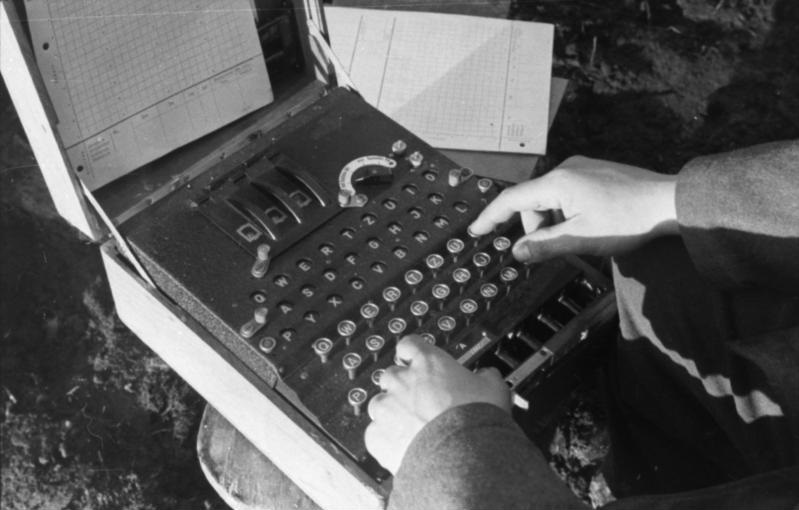

Mi az enigmagép?Az Enigma Gép az egy titkosítógép ami forgó tárcsák és egy kódtáblázat segítségével olyan kódot generál ami feltörhetetlen, és csak az adott kódtáblázattal dekódolható. Az Enigma nem egyetlenegy berendezés volt, hanem számos modellből álló termékcsalád. Az első Enigma gépeket kereskedelmi célokra készítették az 1920-as évek elején. Az 1920-as évek közepétől a német haderő különféle fegyvernemei is használni kezdték, és a biztonság növelésére több változtatást is végrehajtottak. Más országok is használták vagy az Enigmát, vagy az Enigma alapján tervezett saját titkosító gépüket.  |

TörténeteAz első Enigmát Arthur Scherbius német mérnök fejlesztette ki az első világháború végén. Használták már a spanyol polgárháborúban is, majd a második világháború kitörése előtt szolgálatba állította számos ország, többek között a Harmadik Birodalom is. Az Enigmát használói abszolút biztonságosnak tartották, mivel az ezzel kódolt szövegek hagyományos módon megfejthetetlenek voltak. A német fegyveres erők közül elsőként a haditengerészet vezette be az Enigmát. Először a németek havonta váltottak kódtáblázatot de miután kiszivárogtatták átváltottak napi változtatásra. A második világháborúban az M3 enigmagépet használták a németek, ebben már 3 tárcsát lehetett választani a 8 közül. Enigma kódot már 1932-ben is törtek fel, ezt a lengyel Marian Rejewski által vezetett, kriptográfusokból és más matematikusokból álló csoport vitte végbe. Az enigma kódok feltörése nagyban segítette a világháború befejeződését mivel még mindíg azt hitték hogy feltörhetetlen. |

MűködéseAz enigma gépet több elem alkotja, a billentyűzet amin írták a kódolatlan üzenetet, egy kapcsolótábla, ezzel egy adott huzalozási rend megadásával lehetett programozni az enigma gépet, és e rend használatával dekódolni. A tárcsákon az abc betűi voltak, egyetlen tárcsa csak kihejettesíti a betűt, de mint több, más irányba forgó, más mennyiséget ugró tárcsát kombináltunk egy feltörhetetlennek nevezett kódot kaptunk. A gépen volt egy lámpákkal ellátott tábla ami az új betűt mutatta. A fent látható képen egy A betűt H betűvé váltja. |
DekódolásaAz Enigma feltörhetetlennek tartott kódolását az angolok és a franciák kudarcai után először a lengyel Marian Rejewski által vezetett, kriptográfusokból és más matematikusokból álló csoport törte fel 1932-ben. Rejewski megtalálta a hadsereg által használt huzalozási sorrendet. Emellett Rejewski a permutációkról való szakértelmét bevetve a három tárcsa és a fordító huzalozását is kitalálta. Emellett még a tárcsák beállítását és helyzetét is ki kellett találni. Ehhez Rejewski és társai, Jerzy Różycki és Henryk Zygalski a németek egy eljárási hibáját használta fel: kétszer küldték el az üzenet elején a három betűs kulcsot rejtjelezve.[70] Ezért a nyílt szövegben megegyezett az első és a negyedik, a második és az ötödik, a harmadik és a hatodik betű. Az erre a célra épített gépekkel, a ciklométerrel és a „bombával” minden lehetséges állást kipróbáltak erre a hat betűre. Ezzel nagy mértékben csökkentették a kulcsra vonatkozó bizonytalanságot. Több adás lehallgatásával a konkrét kulcsot is megtalálták. Miután a németek 1938. szeptember 15-én megváltoztatták az eljárást,[71] és három hónappal később bevezették az öt tárcsás gépet, a lengyelek már nem tudták megfejteni az üzeneteket, és az Enigma újra biztonságos volt. A lengyelek munkája alapján a későbbi változatokat a Bletchley Parkban állomásozó szövetséges csoport törte fel. Alan Turing vezetésével végezte ezt a fontos munkát. Turingnak az az ötlete támadt, hogy a kapocstáblát több, legtöbbször tizenkét tárcsával szimulálja.[80] Ezzel nagy mértékben tudta csökkenteni a több mint 200 trilliárd lehetőséget. A Turing-bomba a lengyel „bomba” továbbfejlesztése, egy elektromechanikus számítógép. Ha el lehet tekinteni a kapocstáblától és a tárcsák beállításától, akkor már csak 1 054 560 lehetőséget kell átvizsgálni. Ez kézzel még mindig reménytelen, de a Turing-bomba motorja 120-at fordult percenkét, és minden fordulattal 26 lehetőséget vizsgált át, így egy Turing-bomba 1 054 560/(26×120) perc alatt végzett az összes lehetőséggel. Ez kerekítve hat óra. Hatvan Turing-bombával ez az idő hat percre rövidült. Valójában a háború végéig csak Nagy-Britanniában 210 Turing-bombát üzemeltettek.[81] Az átlagosnál sokkal gyakrabban előforduló szavak (angolul cribs) különleges fontossággal bírtak a Turing-bombák használatában. |